Chronicle Plugin for Log Shipper
This document explains how to configure your Chronicle integration with the Log Shipper module of the Netskope Cloud Exchange platform. This integration allows pushing alerts and events from Netkope to the Chronicle platform.
To complete this configuration, you need:
A Netskope tenant (or multiple, for example, production and development/test instances)
A Netskope Cloud Exchange tenant with the Log Shipper module already configured.
A Chronicle account. Obtain your Chronicle Base URL and API Key from your Chronicle representative before proceeding.
Configure the Chronicle Plugin.
Configure Log Shipper Business Rules for Chronicle.
Configure Log Shipper SIEM Mappings for Chronicle.
Validate the Chronicle plugin.
Click play to watch a video.
Go to Settings > Plugins.
Select the Chronicle box to open the plugin creation dialog.
Enter a Configuration Name.
Select a valid Mapping (Default Mappings for all plugins are available). Click Next.
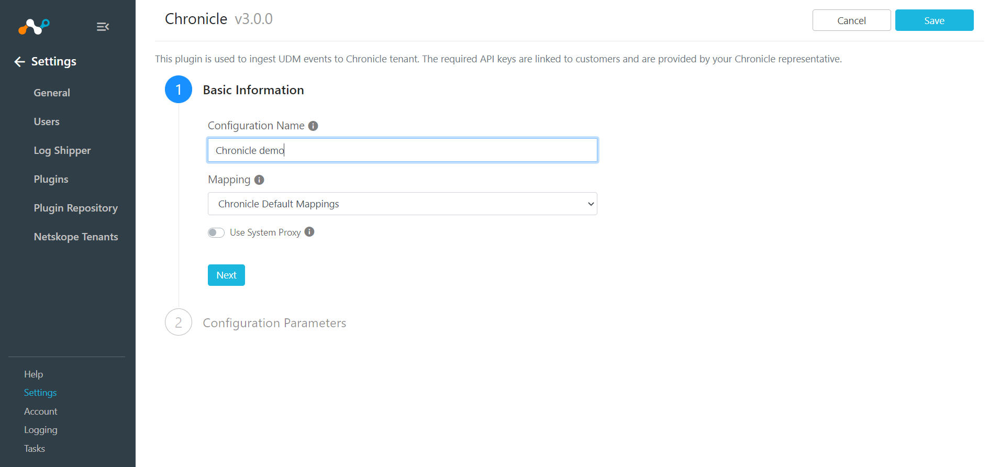 Enter your Chronicle Base URL , API key (which is provided to you by your Chronicle representative), and Valid Extensions (as shown).

Click Save.
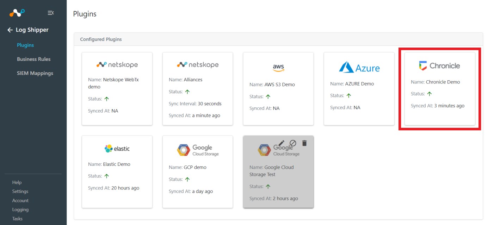
Go to Log Shipper > Business Rules.

Click Create New Rule.

Enter a Rule Name and select the filters to use.
Click Save.

GoLog Shipper > SIEM Mappings and click Add SIEM Mapping.
Select a Source Configuration, Business Rule, and Destination Configuration.
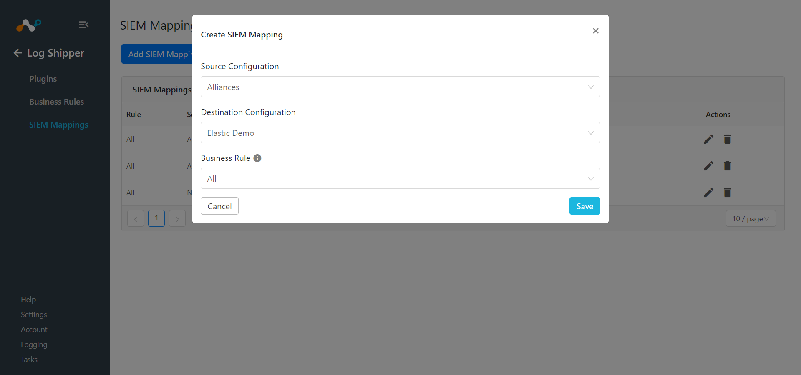 Click Save
To validate the plugin workflow, you can check from Netskope Cloud Exchange and from Chronicle Platform.
To validate from Netskope Cloud Exchange, go to Logging.
| 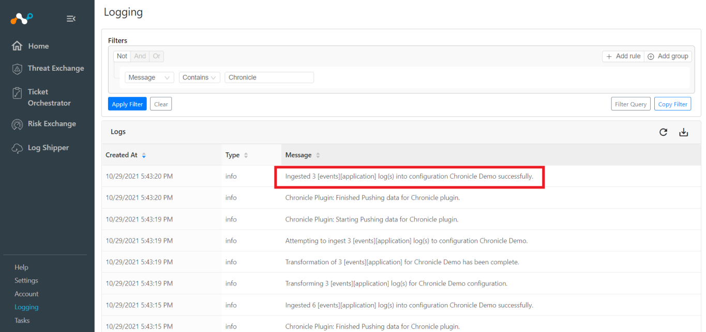 |
To validate from the Chronicle Platform.
Log in to the Chronicle Platform to view data.
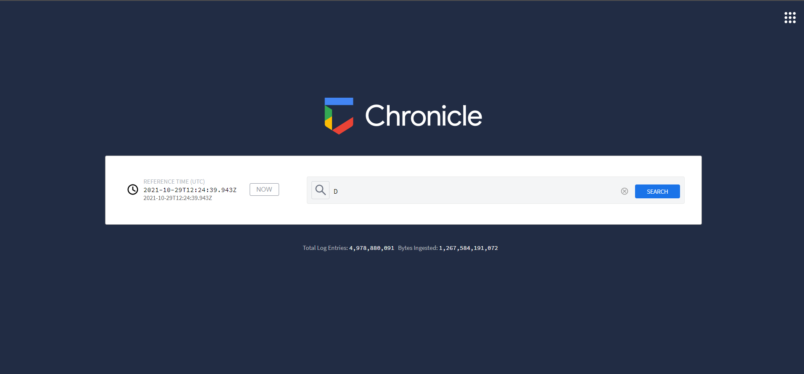 Enter a keyword that you want to search for (in this case, an application).
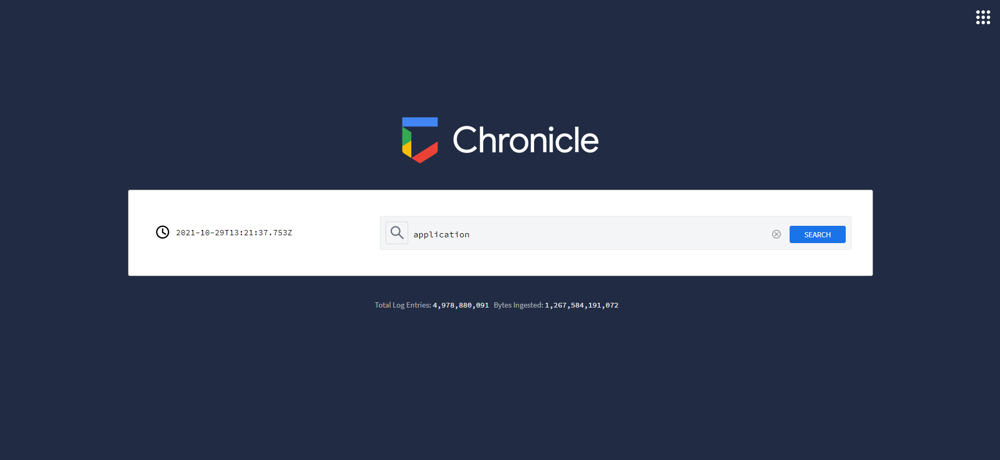 Click Search.
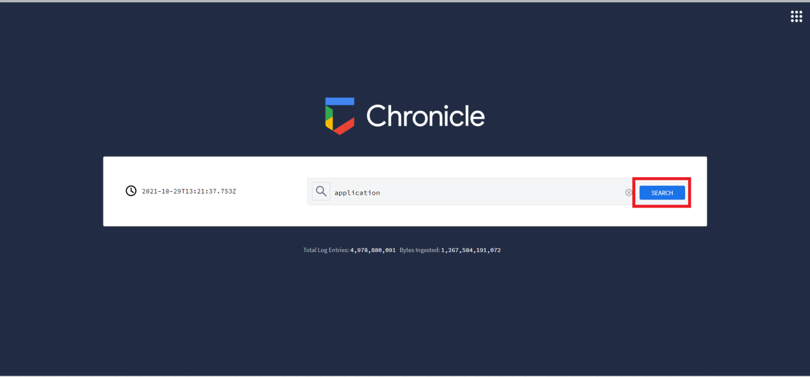 Click Row Log Scan.
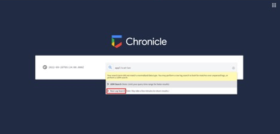 Set Start Time (UTC) and End Time (UTC) accordingly. (You can also select both times by reference (like 1 minute, 2 hour, 1 day). Click Search.
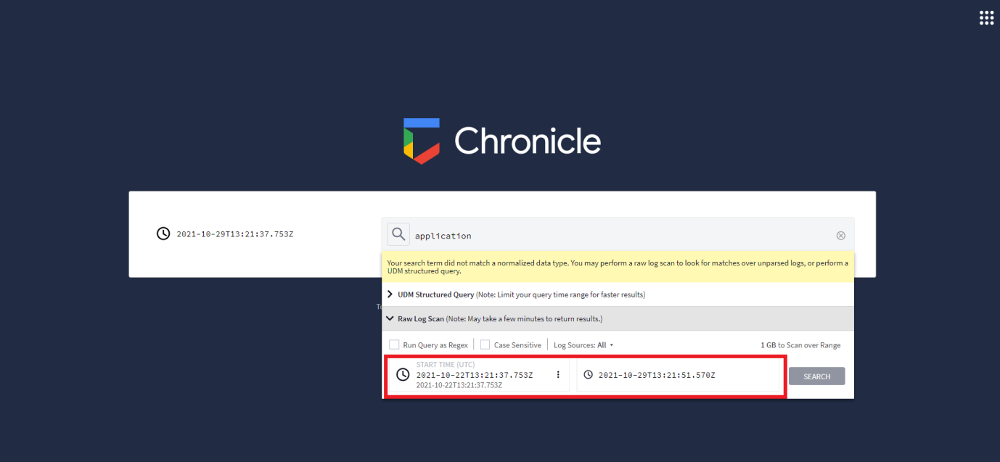 Click the adjacent icon to see details of the log.
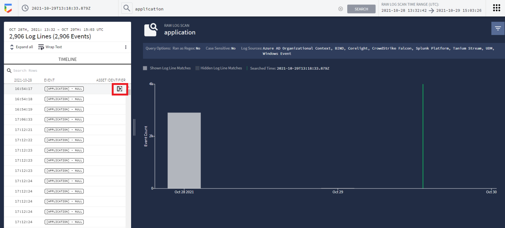 Then you see the ingested data.
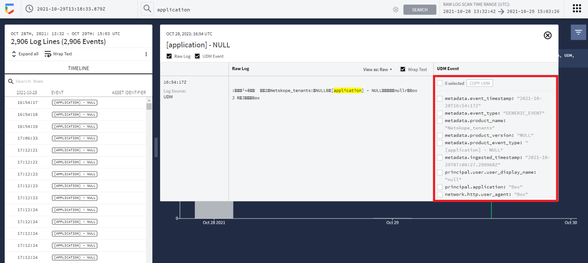